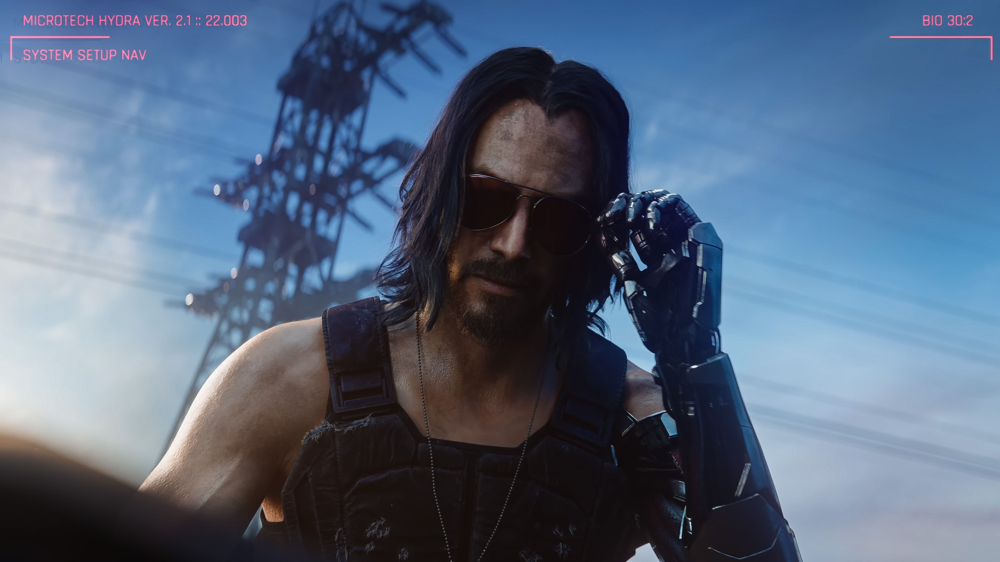
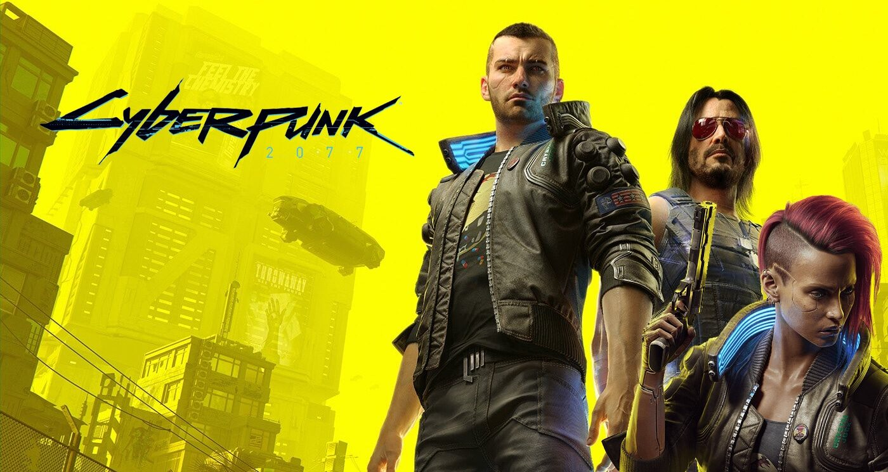

Destaques
Cyberpunk 2077 | Phantom Liberty será a expansão com maior orçamento que a CD Projekt RED já fez, superando Blood and Wine
A desenvolvedora CD Projekt RED está bastante animada com a expansão intitulada de Phantom Liberty, que está em desenvolvimento para Cyberpunk 2077, e agora foram divulgados novos detalhes. Marek Bugdoł, especialista em relações com investidores da CD Projekt RED, falou em recente entrevista sobre o escopo da expansão Phantom Liberty para Cyberpunk 2077 que contará até mesmo com a participação do ator Idris Elba.Bugdoł alega que Phantom Liberty será realmente "gigante" (em termos de orçamento) e será a maior expansão já feita até hoje pela CD Projekt RED. Será algo tão grandioso que vai superar até mesmo Blood and Wine, outra enorme expansão que foi lançada para The Witcher 3.
Cyberpunk 2077 é um RPG de ação de mundo aberto. O jogo se passa em um futuro distópico em Night City, uma cidade futurista controlada por corporações poderosas e governada por bandidos e cybernéticos. O jogador assume o papel de "V", um mercenário que busca realizar seus sonhos de riqueza e poder enquanto se envolve em missões perigosas e conspirações corporativas. Cyberpunk 2077: Phantom Liberty será lançado em 2023 para PC, PlayStation 5 e Xbox Series S|X. Infelizmente os consoles da geração passada ficaram para trás, com a desenvolvedora não dando mais suporte a eles se tratando de grandes conteúdos.
Cyberpunk 2077: diretor de missões admite que o game podia ser menos linear
Pawel Sasko afirma que as expectativas do público eram muito altas e a CD Projekt RED não conseguiu atender a todas elas Apesar de Cyberpunk 2077 trazer um grande mundo aberto e finais diferentes, a CD Projekt RED admite que não entregou todas as promessas narrativas que fez ao público. Durante uma transmissão ao vivo do jogo, o diretor de missões Pawel Sasko afirma que são justas as críticas que afirmam que o RPG é um tanto linear em sua estrutura. Segundo Sasko, embora o título traga sistemas o suficiente para que ele possa ser terminado duas vezes com coisas diferentes acontecendo, “isso não é o suficiente”. Ele explica que, enquanto o game tem várias opções de introduções e finais distintos, o público esperava por ainda mais opções.
Cyberpunk 2077 podia ser melhor
Sasko afirma que muitas das críticas relacionadas a Cyberpunk 2077 tem a ver com a maneira diferente como jogadores e desenvolvedores encaram a linearidade. Ele afirma que, enquanto as missões do jogo trazem diversas decisões pequenas distintas, o público esperava encontrar momentos em que cada escolha gerasse um resultado final completamente diferente.“Eu acho que isso é justo, acredito que poderíamos ter sido melhores”, afirmou Sasko. “Nós sabemos como fazer isso ser melhor e eu esperava mais de nós”, concluiu. Uma das chances que a CD Projekt RED vai ter de provar suas capacidades é o DLC Phantom Liberty, que promete ter o maior investimento financeiro de um conteúdo adicional desenvolvido pela empresa. Ainda sem data de lançamento, a expansão promete trazer uma nova área explorável para Night City e se aprofundar ainda mais na história de Johnny Silverhand. Exclusiva da versão de nova geração do game e do PC, ela deve alterar um pouco os acontecimentos finais de Cyberpunk 2077, além de trazer mais opções de gameplay e exploração.